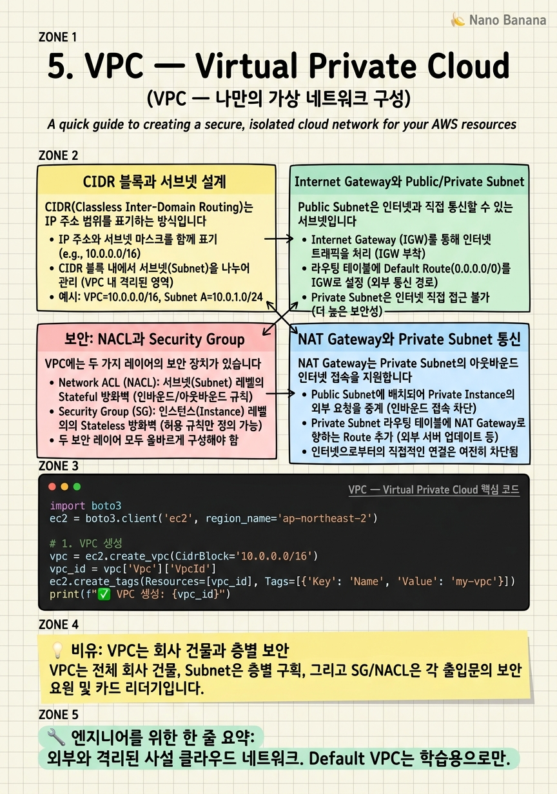

VPC — Virtual Private Cloud

🎯 학습 목표
- VPC, Subnet, CIDR 블록의 개념을 이해한다
- Public Subnet과 Private Subnet의 차이를 설명할 수 있다
- Internet Gateway와 NAT Gateway의 역할을 구분할 수 있다
- Route Table을 설정해 트래픽을 올바르게 라우팅할 수 있다
- 2-tier 또는 3-tier 네트워크 구조를 VPC에 구현할 수 있다
VPC(Virtual Private Cloud)는 AWS 내에서 논리적으로 격리된 나만의 가상 네트워크입니다. AWS에 처음 가입하면 각 리전에 Default VPC가 자동으로 만들어져 있어 바로 EC2를 생성할 수 있지만, 프로덕션 환경에서는 보안과 구조를 위해 직접 VPC를 설계해야 합니다.
VPC는 온프레미스 데이터센터의 네트워크 설계를 클라우드로 옮겨온 것입니다. 회사 내부 LAN처럼 외부와 격리된 공간 안에서 EC2·RDS·Lambda 등 AWS 리소스들이 서로 통신합니다.
 이미지 출처: © Amazon Web Services, Inc. — VPC with servers in private subnets and NAT (교육 목적 인용)
이미지 출처: © Amazon Web Services, Inc. — VPC with servers in private subnets and NAT (교육 목적 인용)
위 다이어그램은 프로덕션에서 가장 자주 쓰이는 VPC 패턴입니다: 2개의 AZ에 Public Subnet(로드 밸런서·NAT Gateway)과 Private Subnet(앱 서버·DB)을 배치합니다.
핵심 내용
CIDR 블록과 서브넷 설계
CIDR(Classless Inter-Domain Routing)는 IP 주소 범위를 표기하는 방식입니다. 10.0.0.0/16에서 /16은 앞에서 16비트가 고정됨을 의미하며, 나머지 16비트로 \(2^{16} = 65,536\)개의 IP 주소를 사용할 수 있습니다.
VPC를 만들 때 일반적으로 RFC 1918의 사설 IP 범위를 사용합니다:
10.0.0.0/8~10.0.0.0/16— 대규모 엔터프라이즈172.16.0.0/12— 중규모192.168.0.0/16— 소규모 (가정 공유기와 동일)
서브넷(Subnet)은 VPC를 더 작은 IP 범위로 쪼갠 것입니다. VPC가 10.0.0.0/16 (65,536개 IP)이라면:
- Public Subnet A: 10.0.1.0/24 (256개 IP) — AZ-a
- Public Subnet B: 10.0.2.0/24 (256개 IP) — AZ-b
- Private Subnet A: 10.0.11.0/24 (256개 IP) — AZ-a
- Private Subnet B: 10.0.12.0/24 (256개 IP) — AZ-b
AWS는 각 서브넷에서 5개의 IP를 예약합니다(첫 번째 4개 + 마지막 1개). 따라서 /24 서브넷의 실제 사용 가능한 IP는 251개입니다.
Internet Gateway와 Public/Private Subnet
Public Subnet은 인터넷과 직접 통신할 수 있는 서브넷입니다. 인터넷 접근이 가능하려면 두 가지가 필요합니다:
1. Internet Gateway(IGW) — VPC에 부착하는 인터넷 출입문
2. Route Table 설정 — 0.0.0.0/0 (모든 트래픽)을 IGW로 보내는 라우트
Private Subnet은 Route Table에 IGW로의 라우트가 없어 외부 인터넷에서 직접 접근할 수 없습니다. 데이터베이스 서버, 내부 앱 서버 등 외부에 노출되어서는 안 되는 리소스를 배치합니다.
NAT Gateway(Network Address Translation Gateway)는 Private Subnet의 EC2가 인터넷에 나가는 요청을 할 수 있게 해주는 장치입니다. 예를 들어 Private Subnet의 앱 서버가 npm 패키지를 다운로드하거나 외부 API를 호출해야 할 때 NAT Gateway를 거쳐 나갑니다. 반대로 인터넷에서 Private Subnet으로 직접 들어오는 것은 불가능합니다.
| Internet Gateway | NAT Gateway | |
|---|---|---|
| 위치 | VPC에 하나 | Public Subnet |
| 방향 | 양방향 (In + Out) | 단방향 (Out only) |
| 대상 서브넷 | Public | Private |
| 비용 | 무료 | 시간·데이터 과금 |
NAT Gateway는 시간당 약 $0.045 + 데이터 처리 비용이 발생합니다. 개발/테스트 환경에서는 비용 절약을 위해 NAT Instance(EC2 기반)를 사용하는 경우도 있지만, 프로덕션에서는 관리형 NAT Gateway를 권장합니다.
보안: NACL과 Security Group
VPC에는 두 가지 레이어의 보안 장치가 있습니다.
Security Group은 EC2 인스턴스 레벨의 방화벽입니다 (4장에서 다룸). Stateful이라 응답 트래픽을 자동으로 허용합니다.
NACL(Network Access Control List)은 서브넷 레벨의 방화벽입니다. Stateless이기 때문에 인바운드와 아웃바운드 규칙을 따로 설정해야 합니다. NACL은 규칙 번호 순서대로 평가되며, 처음 매칭되는 규칙이 적용됩니다.
| 구분 | Security Group | NACL |
|---|---|---|
| 레벨 | 인스턴스(ENI) | 서브넷 |
| 상태 | Stateful | Stateless |
| 규칙 종류 | Allow만 | Allow + Deny |
| 평가 방식 | 모든 규칙 평가 | 번호 순서대로 |
| 기본값 | 모두 거부 | 모두 허용 |
대부분의 경우 Security Group만으로도 충분합니다. NACL은 서브넷 전체를 차단해야 하는 특별한 경우(예: 특정 IP 대역 차단)에 사용합니다.
VPC Flow Logs를 활성화하면 VPC 내 모든 트래픽의 메타데이터(소스 IP, 목적지 IP, 포트, 허용/거부 여부)를 S3나 CloudWatch Logs에 기록할 수 있습니다. 보안 감사나 문제 해결에 필수적입니다.
💡 비유로 이해하기
VPC를 이해하는 최고의 비유는 보안이 잘 된 회사 건물입니다. 건물(VPC) 전체는 외부와 분리된 사유지입니다. 건물 안에는 여러 층(Subnet)이 있고, 각 층마다 다른 접근 정책이 있습니다.
1층 로비(Public Subnet)는 방문객이 출입할 수 있는 공개 공간입니다. 프론트 데스크(Load Balancer)가 있고, 건물 정문(Internet Gateway)을 통해 외부인이 들어올 수 있습니다. 지하 금고실(Private Subnet)은 인가된 직원만 들어갈 수 있는 내부 공간입니다. 외부인은 직접 접근 불가능합니다.
NAT Gateway는 건물 내부 직원이 잠깐 외출할 수 있는 비상구입니다. 직원(Private Subnet의 EC2)이 인터넷에서 자료를 가져올 수 있지만, 외부인이 비상구로 들어오는 것은 불가능합니다. Route Table은 층별 안내판입니다. '인터넷으로 가려면 정문(IGW)으로', '지하실로 가려면 계단(내부 라우팅)으로' 안내합니다.
💻 코드 예시
boto3로 기본적인 VPC 구조를 프로그래밍 방식으로 생성하는 예제입니다. VPC → 서브넷 → 인터넷 게이트웨이 → 라우팅 테이블 순서로 생성합니다.
import boto3
ec2 = boto3.client('ec2', region_name='ap-northeast-2')
# 1. VPC 생성
vpc = ec2.create_vpc(CidrBlock='10.0.0.0/16')
vpc_id = vpc['Vpc']['VpcId']
ec2.create_tags(Resources=[vpc_id], Tags=[{'Key': 'Name', 'Value': 'my-vpc'}])
print(f"✅ VPC 생성: {vpc_id}")
# 2. Public Subnet 생성
subnet = ec2.create_subnet(
VpcId=vpc_id,
CidrBlock='10.0.1.0/24',
AvailabilityZone='ap-northeast-2a'
)
public_subnet_id = subnet['Subnet']['SubnetId']
print(f"✅ Public Subnet: {public_subnet_id}")
# 3. Internet Gateway 생성 및 VPC에 연결
igw = ec2.create_internet_gateway()
igw_id = igw['InternetGateway']['InternetGatewayId']
ec2.attach_internet_gateway(InternetGatewayId=igw_id, VpcId=vpc_id)
print(f"✅ Internet Gateway 연결: {igw_id}")
# 4. Route Table 생성 및 IGW 라우트 추가
rt = ec2.create_route_table(VpcId=vpc_id)
rt_id = rt['RouteTable']['RouteTableId']
# 0.0.0.0/0 → IGW (인터넷으로 가는 모든 트래픽을 IGW로)
ec2.create_route(RouteTableId=rt_id, DestinationCidrBlock='0.0.0.0/0', GatewayId=igw_id)
# Public Subnet에 Route Table 연결
ec2.associate_route_table(RouteTableId=rt_id, SubnetId=public_subnet_id)
print(f"✅ Route Table 설정 완료: {rt_id}")VPC 생성 순서가 중요합니다: VPC → Subnet → IGW → Route Table → 연결. Route Table에서 0.0.0.0/0 → IGW 라우트를 추가하는 것이 핵심입니다. 이 라우트가 없으면 서브넷이 Public처럼 보여도 실제로는 인터넷에 접근할 수 없습니다.
🏭 현업에서의 평가
✅ 시니어가 보는 것
- Public/Private Subnet 분리가 왜 중요한지 보안 관점에서 설명할 수 있는가
- NAT Gateway 비용을 고려한 설계를 하는가 (예: 개발 환경에서는 줄이기)
- VPC Peering, Transit Gateway로 여러 VPC를 연결하는 방법을 아는가
⚠️ 레드 플래그
- 모든 리소스를 Public Subnet에 배치하는 설계
- Default VPC를 그대로 프로덕션에 사용
- CIDR 블록이 너무 작아 IP가 부족해지는 상황
🎤 예상 인터뷰 질문
- Private Subnet의 EC2가 인터넷에서 소프트웨어를 다운로드해야 할 때 어떻게 설정하겠습니까?
- 두 개의 VPC(10.0.0.0/16, 10.1.0.0/16)가 서로 통신해야 할 때 어떤 옵션을 사용하겠습니까?
- Security Group과 NACL을 언제 각각 사용하겠습니까?
✨ 핵심 요약
VPC는 나만의 네트워크
외부와 격리된 사설 클라우드 네트워크. Default VPC는 학습용으로만.
Public Subnet = IGW + Route
인터넷 게이트웨이를 붙이고 Route Table에 0.0.0.0/0 → IGW가 있어야 Public.
DB는 Private Subnet에
외부에서 직접 접근 불가능한 Private Subnet에 RDS·ElastiCache를 배치.
NAT Gateway로 외부 요청
Private Subnet이 인터넷으로 나가는 것만 허용. 들어오는 것은 차단.
멀티-AZ가 고가용성의 핵심
각 AZ에 Subnet 쌍(Public+Private)을 만들어 장애 대비.
NACL은 서브넷 방화벽
Stateless. 인바운드·아웃바운드 따로 관리. 기본값은 모두 허용.
VPC Flow Logs 필수
모든 트래픽 메타데이터를 기록. 보안 감사와 문제 해결에 필수.
CIDR은 넉넉하게
한 번 만든 VPC CIDR은 줄일 수 없다. 처음부터 여유 있게 (/16).